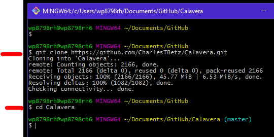
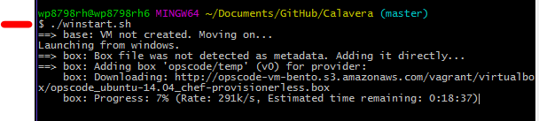
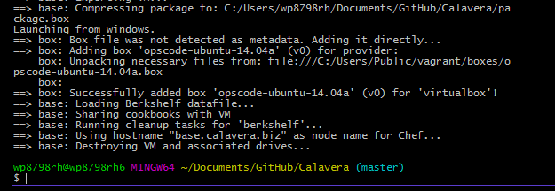

These exercises introduce basic skills and technologies used in a Linux product development environment.
After completing this assignment you will be able to:
You are expected to devlop a working knowledge of the following. If you are having trouble there are several resources available, besides a Google Search You can also ask a teaching assistant or ask the instructor for assistance.
Refer to the websites for the following software applications.:
vagrant plugin install vagrant-vbguest
Examine the above software to learn how to create a development environment.
Use the Snipping Tool to make a screen shot showing Virtual Box, Chef and Vagrant websites. Save the screen shot as "Ex1" as a .gif, .png or .jpg file in an appropriate folder location as you will be needing it later. (200) 1. Save the screen shot as "Ex1" in your ' ' folder. You will be combining screen shots from several exercises at the end of this assignment, just as you did in Formative00-PDF File Creation.
Use GitBash to obtain the necessary script files. Note: GitBash must have already been properly installed for this to work.
Using Windows File Explorer, navigate to C:\Users\'StarID'\Documents\GitHub Right click the folder 'GitHub' and choose 'Git Bash Here'. Type in the following to Git Bash, which has 'MINGW64' in the titlebar. git clone https://github.com/CharlesTBetz/Calavera.git After downloading the files, type in cd Calavera so that 'Calvera' is the working directory, so you can run scripts. 
git clone https://github.com/CharlesTBetz/Calavera.git
cd Calavera
(100) 2. Make a screen shot of your Windows File Explorer GitHub 'Calavera' directory showing the files and folders. Use the Snipping Tool to make a screen shot. Save the screen shot as "Ex2_GitHub" as a .gif, .png or .jpg file in an appropriate folder location as you will be needing it later. Save the screen shot as "Ex2" in your ' ' folder. You will be combining screen shots from several exercises at the end of this assignment, just as you did in Formative00-PDF File Creation.
Virtual machines can easily be created by running Vagrant, and applications can be installed using Chef.
Do not actually run these commands, rather review what these commands accomplish. In GitBash type in the following to create your virtual development/operations environment. This script will take about 20 minutes to run. ./winstart.sh You will receive multiple User Account Control (UAC) notifications as the virtual machines start, and a network security alert. Authorize all with the default values. This is downloading and installing a 1GB Ubuntu image, it may take about 25 minutes to complete, depending on your network connection, and how many packages need to be updated. As it runs there will be a lot of text written to the Git Bash window. 
./winstart.sh
(200) 3. After running the script, in Git Bash, take a screen shot of the last few lines on your screen, which should look like this, but with your StarID  Use the Snipping Tool to make the screen shot Save the screen shot as "Ex3" as a .gif, .png or .jpg file in the same folder location as the other screen shots as you will be needing it later. Save the screen shot as "Ex3" in your ' ' folder. You will be combining screen shots from several exercises at the end of this assignment, just as you did in Formative00-PDF File Creation.
Additional virtual machines for your company can now easily be created by running Vagrant, and applications can be installed using Chef.
Do not actually run this command, instead research what it will do. In GitBash type in the following to create your virtual development/operations environment. Note that this will take about 20 minutes to run. vagrant up cerebro1 brazos1 espina1 hombros1 Note that you will again be asked to approve several UAC warning messages.
vagrant up cerebro1 brazos1 espina1 hombros1
(200) 4. After running the script, in Git Bash, take a screen shot of the last few lines on your screen, which should look like this Use the Snipping Tool to make the screen shot Save the screen shot as "Ex4" as a .gif, .png or .jpg file in the same folder location as the other screen shots as you will be needing it later. Save the screen shot as "Ex4" in your ' ' folder. You will be combining screen shots from several exercises at the end of this assignment, just as you did in Formative00-PDF File Creation.
(50) 5. Review the materials on the Calvera project and answer the following question.
What is the purpose of cerebro?
(50) 6. Review the materials on the Calvera project and answer the following question.
What is the purpose of brazos?
(50) 7. Review the materials on the Calvera project and answer the following question.
What is the purpose of espina?
(50) 8. Review the materials on the Calvera project and answer the following question.
What is the purpose of hombros?
Now that you have the four virtual machines provisioned, open Virtual Box to examine the settings.
(200) 9. After studying Virtual Box, take a screen shot of the Virtual Box website. Use the Snipping Tool to make the screen shot Save the screen shot as "Ex5 _VirtualBox" as a .gif, .png or .jpg file in the same folder location as the other screen shots as you will be needing it later.
(50) 10. Review the Virtual Box settings and answer the following question.
What is the cerebro operating system?
(50) 11. Review the Virtual Box settings and answer the following question.
How many network adapters are there in brazos?
(50) 12. Review the Virtual Box settings and answer the following question.
How many shared folders, and list the 'Machine Folder' used for the first one, for espina?
Use a web browser to verify that you have published your website to https://classes.winona.edu/... Check that your name, StarID, email, class, semester, section and all of your answers are correct and visible. From the menu choose File>Print... and using "Microsoft Print to PDF" save a copy of this assignment as a .pdf file in your ' ' folder.
(50) 13. Save your file 'WebPage.pdf' to the ' ' folder.
Create one .pdf (portable document format) file from the screen shots that you have taken by following these steps.
(50) 14. Save your file 'ScreenShots.pdf' to the ' ' folder.
Use PDFill to merge the WebPage.pdf file with the ScreenShots.pdf file, and save it as 'Summative03.pdf' in ' ' folder.
(50) 15. Upload your file 'Summative03.pdf' to the D2L 'Summative03' Assignment folder.
Use a browser to view your completed and published website at: https://classes.winona.edu/... Ensure that you have linked this assignment on your home page. Note that your screen shots do not have to be completed to perform this step.